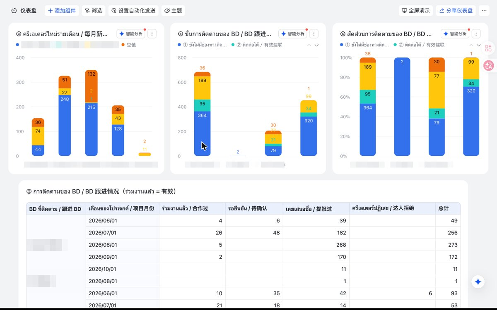
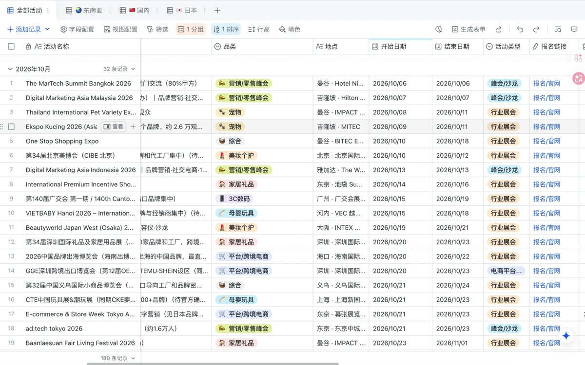
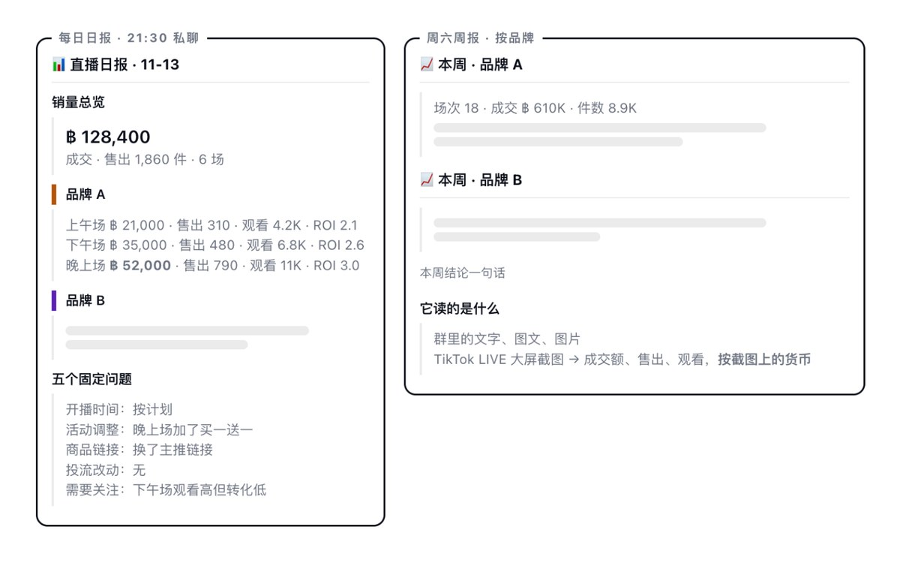
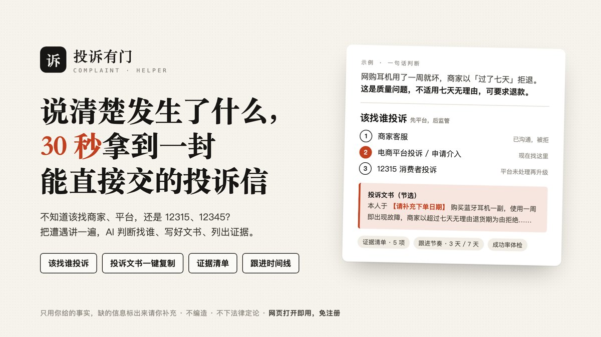
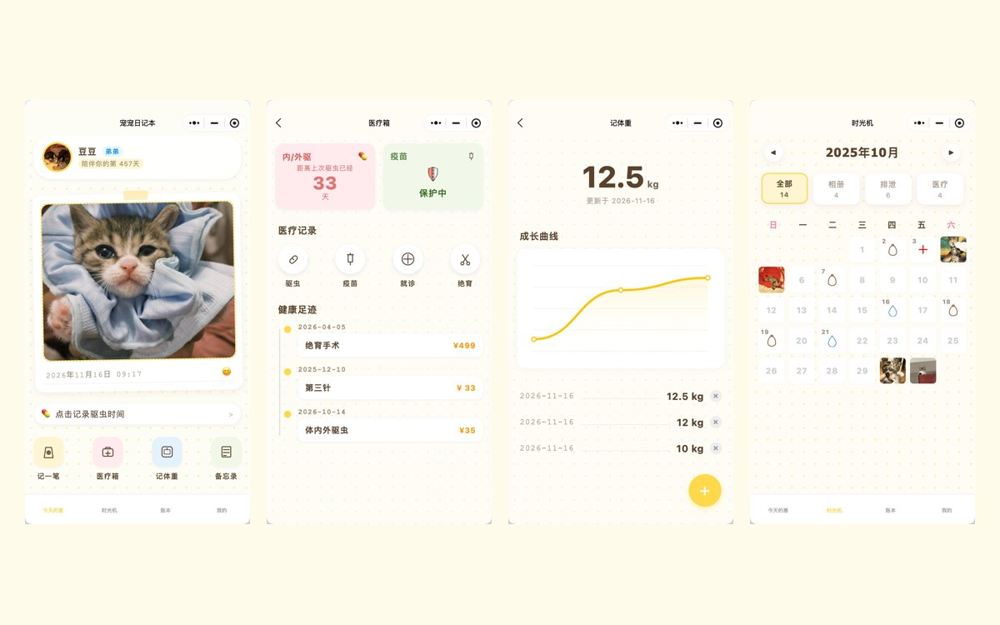
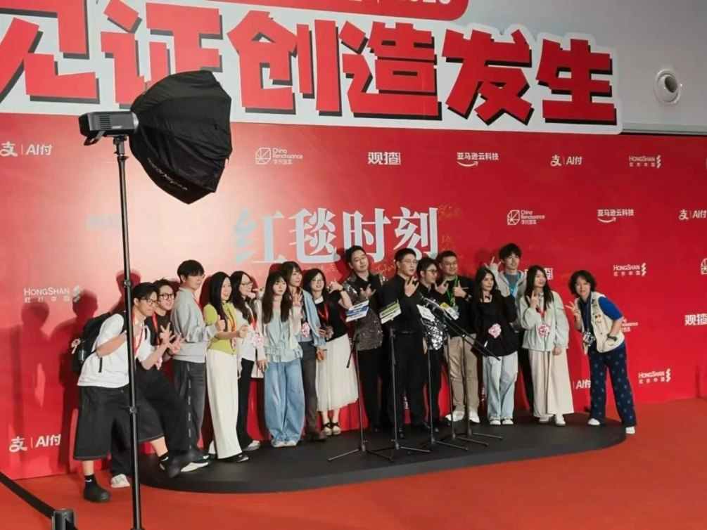
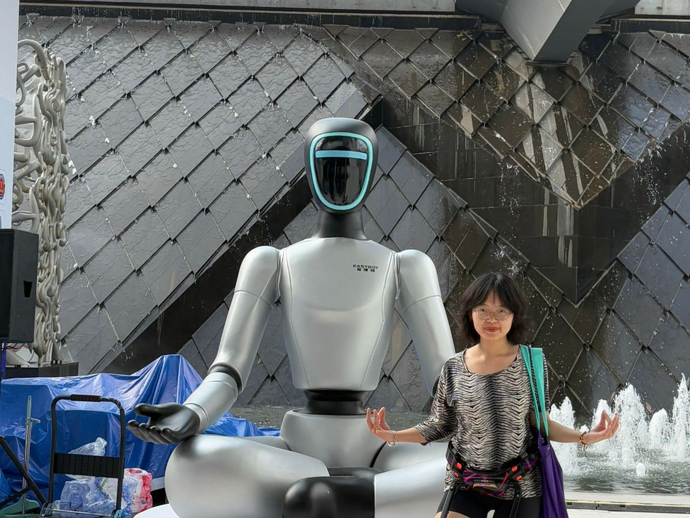
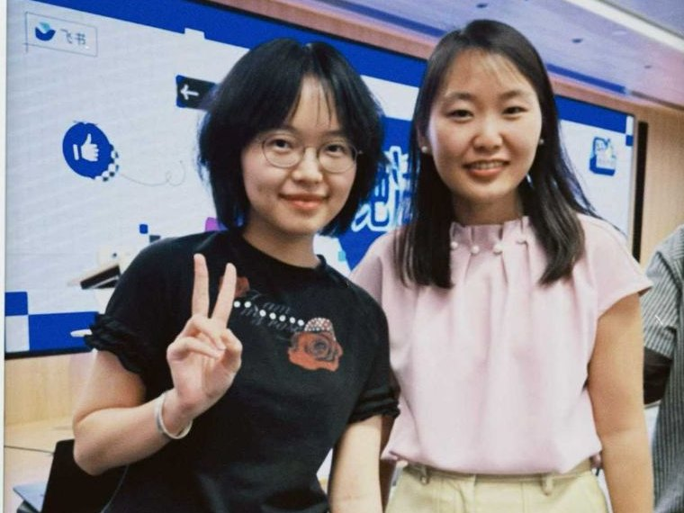

About
From drawing to e-commerce design to AI, I have been doing the same thing in three chapters: turning an idea into something people actually use and pay for. My current job is the scaled-up version. I sit inside the daily work of teams in Thailand and Vietnam, take each SOP apart, separate what AI can do from what a person must judge, then build the former into tools and digital employees, hand them to the team, and teach them until they use them.
At university I worked as a freelance illustrator. I drew what I noticed in daily life, then turned the drawings into merch like fridge magnets: found the printers, negotiated the process, sourced and customized, and sold at many art markets. The best sellers at the stall were never the best drawings. They were the ones with the clearest story. That was the first time I learned that "will anyone buy it" is harder, and more interesting, than "is it well drawn".
In 2023, during an internship at Zhizhuan (an Alibaba-ecosystem company), I started using GPT and Midjourney at work. After graduating I joined brand companies as an e-commerce brand designer: Juzi Biotech and Feeprof, both in-house brands selling on Tmall, JD and Pinduoduo. I made product pages, promo images and livestream visuals, put Midjourney and ComfyUI into the daily image pipeline, and changed promo images from shoot-and-composite to generate-then-select. The whole design team's output got faster.
When AI took off at the end of 2025, I started working by day and learning agents, writing code and entering hackathons by night in early 2026, publishing the process as videos and articles. 6,000+ followers across platforms, one video at 140K views, and I stayed active in AI creator communities and the MCN ecosystem. This is also when I moved from "using AI to make images" to "using code to turn a workflow into a tool".
I left my previous company at the end of August and focused on AI + cross-border roles. In October I joined a Southeast Asian cross-border creator-marketing group with teams in Bangkok, Ho Chi Minh City, Malaysia and Japan. I am the group's only person doing internal AI adoption.
Experience
The group's only person doing internal AI adoption. I start by breaking down frontline teams' SOPs, separating the steps AI can automate from the ones that must stay with a person for judgment and review, then build the tools myself: written with Claude Code, delivered through GitHub for the company's engineers to deploy. Business logic and product are entirely my own work.
Two delivery forms: web tools deployed on company servers, and digital employees inside Lark.
- Content: short-video content workbench, travel-trend monitoring
- Business development: creator CRM, trade-show intel daily, KOL digital employee, KOC digital employee
- Livestream: operations digital twin
Users are colleagues in China, Thailand and Vietnam. Every tool ships with a bilingual user manual and case handbook, and I onboard the team myself. The group treats this internal efficiency work as its first case study; the next step is customized AI training and adoption for Southeast Asian enterprises.
Household cleaning for families with babies and pets, around RMB 90 per order, premium in its category. Owned all channels on Tmall, JD and Pinduoduo: product pages, promo images, livestream rooms, campaign assets. AI went into three lines:
- Daily images: every image starts from a prompt, written one by one in detail, then product details and brand type adjusted in Photoshop
- Ad testing: promo images went from one version to many, generated in batches by selling point, audience and color mood, then sent to paid testing
- Themes and IP: once a campaign theme (such as winter's "fluffy") or the brand mascot was approved, assets in a consistent tone were generated in batches and reused across KV, storefront, hero images and promos. With a three-view sheet of the mascot bear, we could generate it washing dishes, holding a red envelope, or sitting in a shopping cart
A premium beauty brand built from zero. Owned product visuals, livestream e-commerce pages and social visuals, working with the MCN's creators and hosts. Midjourney took on two kinds of production:
- New-product visuals: generated AI models and scenes, composited with real product shots, replacing model photography and 3D rendering for launches
- Hero and product-page assets: batches of premium beauty-style hero images, plus ingredient and efficacy visuals such as cells, skin structure and oil-water fusion
A business-knowledge content company serving enterprises. Owned visuals and layout for content, and brought AI into content production:
- Articles: used GPT to turn expert-interview transcripts into articles
- Illustrations: used Midjourney to illustrate articles, creating the "knowledge capsule" format
Projects











Writing & Credentials
Four Chinese tea brands' playbooks seen on the ground in Bangkok, with 5 takeaways for going overseas · WeChat article, in Chinese
- Alibaba Cloud Model Studio · first-batch certified developer, T2 · E-commerce Wireframe Strategist Skill listed in the Model Studio open-source showcase ↗ · Bund Summit 2026
- SenseTime Raccoon · evangelist program, evangelist candidate
- Hedgehog Planet (Hangzhou) · invited AI tools instructor
- Guancha · signed AI creator
AI content account: 6,000+ followers · one video at 140K views · 400-member community
Events
AI conferences, hackathons and community meetups I attend in person. I stay in the circle.
 2026.11
2026.11
2026.10
2026.07
2026.07 2026.06
2026.06 2026.04
2026.04